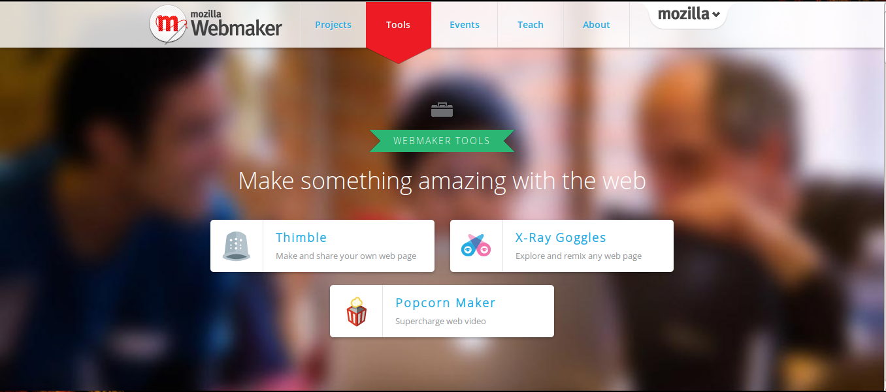

Webmaker Session
Manel Rhaiem, manel.rhaiem92@gmail.com
À Propos
Faites quelque chose d'étonnant avec le web
Créant une génération de Webmakers
C'est quoi le “webmaker”?
Façonnage l'avenir du web ensemble!
Les Outils de Webmaker

Thimble
Réalisez et partagez vos propre page Web
Caractéristique
Simple Pour créer vos propres pages Web
Vous permet d'écrire en HTML et CSS codes
Vous pouvez prévisualiser votre travail, l'héberger et partager instantanément
Vous aide à vérifier vos erreurs
X-Ray Goggles
Explorer et remélangent n'importe quelle page web
Caractéristique
Changer page Web comme une magie
Nous permet de comprendre "ce que fait le web "
Remix, modifier et partager leurs pages web préférées
Popcorn Maker
Supercharge vidéo sur le web
Caractéristique
Facile à améliorer, remélangent et partager des vidéos web
Utilisez vos navigateur pour combiner vidéo et audio avec le contenu du reste du web
Créer vos propres journaux télévisés interactifs, des vidéos pop-up, des rapports multimédias, des vidéos de fans, visites guidées Web et plus encore
Voici comment vous pouvez vous impliquer
Join our weekly Webmaker community calls
Join the Summer Code Party (find event/create your own)
Sign up for updates
Get in touch
Check out our FAQ
Share your work(#mozparty or #webmaker)
Submit your own Webmaker project or how-to
Join or create an event
Join Mozilla